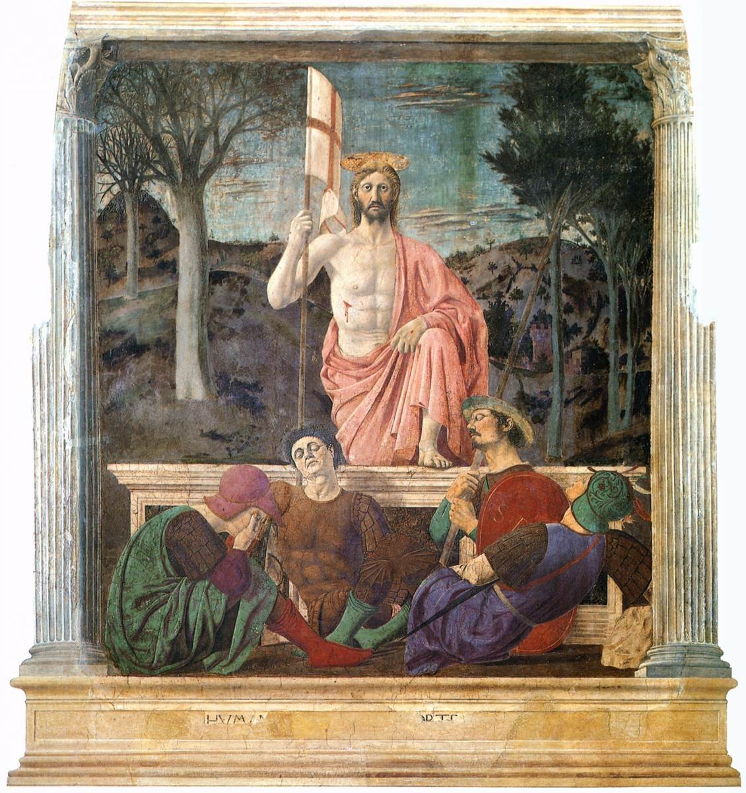

1 Corintios 15 — La Traducción Mister

Pablo cuenta el levantarse al tercer día (15:4) entre lo que transmitió. El cuadro muestra al Cristo resucitado saliendo del sepulcro, la imagen del levantarse de la que argumenta el capítulo. Los soldados dormidos son añadido del pintor y no están en el texto de Pablo.

“El evangelio que les anuncié.” to euangelion ho euēngelisamēn hymin, la buena noticia que les anuncié. El verbo euangelizō es dar buena noticia, y el sustantivo es la palabra del evangelio (euangelion). El capítulo abre nombrando lo que recibieron y en lo que están firmes. El shelf: la TNM 2019 “Hermanos, ahora les recuerdo las buenas noticias que les anuncié, las cuales aceptaron y por las cuales se han mantenido firmes.”
“Si lo retienen.” ei katechete, si lo retienen. El verbo katechō, retener, es el de 11:2 para las tradiciones. La condición está en la frase sin acusación: la salvación depende de retener la palabra, y creer en vano es el peligro. El shelf: la TNM 2019 “También son salvados mediante las buenas noticias que les anuncié si se aferran a ellas.”
“Les transmití lo que también recibí.” parelabon y paredōka, los verbos de recibir y transmitir que el capítulo usa para la tradición (paradosis), como en 11:23. La frase da una lista que Pablo dice haber recibido, y vincula la muerte y el tercer día con las Escrituras. El shelf: la TNM 2019 “Porque entre las primeras cosas que les transmití estaba lo que yo también recibí: que Cristo murió por nuestros pecados, según las Escrituras;”.
“Se apareció.” ōphthē, se apareció, el mismo verbo en cada aparición: a Cefas, a los Doce, a más de quinientos, a Santiago, a todos los apóstoles, y a Pablo. El verbo es el pasivo de horaō, ver, y nombra una aparición más que una visión interior. El shelf: la TNM 2019 “Luego se les apareció a más de 500 hermanos a la vez, la mayoría de los cuales siguen con nosotros, aunque algunos ya se han dormido en la muerte.”
“Como a uno nacido fuera de tiempo.” hōsperei tō ektrōmati, como a alguien nacido prematuramente. La palabra es la imagen de un nacimiento fuera de su tiempo, y Pablo se la aplica a sí mismo como el último. El shelf: la TNM 2019 “Al final se me apareció a mí como a alguien nacido prematuramente.”
“El menor de los apóstoles.” ho elachistos tōn apostolōn, el menor de los apóstoles (apostolos). Pablo nombra su persecución de la congregación de Dios, la palabra ekklēsia que esta traducción dice «congregación» en todos los capítulos, y luego la gracia de Dios que lo hizo lo que es. El shelf: la TNM 2019 “Porque yo soy el menor de los apóstoles, y no merezco ser llamado apóstol, pues perseguí a la congregación de Dios.”
“Por la gracia de Dios soy lo que soy.” charti de theou eimi ho eimi. La palabra charis es la misma de 1:4. El shelf: la TNM 2019 “Pero por la bondad inmerecida de Dios soy lo que soy.”
“Ninguna resurrección de los muertos.” anastasis nekrōn, el levantarse de los muertos. El argumento es condicional de principio a fin: si no hay resurrección, Cristo no ha sido levantado, y entonces la predicación y la fe están vacías. La traducción conserva cada «si» como lo tiene el griego. El shelf: la TNM 2019 “Ahora bien, si se está predicando que Cristo fue levantado de entre los muertos, ¿cómo es que algunos de ustedes dicen que no hay resurrección de los muertos?”
“Falsos testigos.” pseudomartyres tou theou, falsos testigos de Dios. La palabra es la de un testigo en un juicio, y la frase hace que los predicadores sean los testigos que se equivocarían. El shelf: la TNM 2019 “somos falsos testigos de Dios, porque hemos dado testimonio contra Dios al decir que él resucitó al Cristo.” (esta cita en la TNM 2019 dice «resucitó» en lugar de «levantó»; la traducción conserva el verbo griego).
“Durmieron en Cristo.” koimēthentes, los que durmieron. El verbo para los muertos es el mismo del versículo 6, y la frase dice que sin resurrección han perecido. El shelf: la TNM 2019 “Entonces, también los que se han dormido en la muerte en unión con Cristo han muerto para siempre.” La TNM 2019 traduce «perecido» como «han muerto para siempre».
“Primicias.” aparchē, la primera parte de la cosecha. Cristo es las primicias de los que durmieron, y el versículo 23 da el orden: cada uno en su propio rango. La palabra tagma, rango u orden, es la palabra militar para una compañía en su puesto.
“En Adán todos mueren.” El contraste de Adán y Cristo pone a un hombre frente a otro, y la muerte por el primero frente a la vida por el último. La frase no da los detalles del relato del Génesis; los supone. El shelf: la TNM 2019 “Porque, así como en Adán todos están muriendo, así también en el Cristo todos recibirán vida.”
“Luego viene el fin.” eita to telos, luego el fin, cuando entregue el reino a Dios y Padre, y haya abolido todo gobierno, autoridad y poder. La frase describe una secuencia, y la traducción conserva la secuencia como la da el griego. Las lecturas de los versículos 24–28 se dividen sobre quién es el sujeto de la entrega y qué significa la sumisión del Hijo. La nota registra estas lecturas y no elige una; la traducción conserva «el Hijo mismo se someterá» en voz pasiva, como lo tiene el griego. El shelf: la TNM 2019 “Y, cuando todas las cosas hayan sido sometidas a él, entonces el Hijo mismo también se someterá a aquel que sometió todas las cosas a él, para que Dios sea todas las cosas para todos.”
“El último enemigo.” El versículo cita el salmo del 27: puso todas las cosas bajo sus pies, y la frase señala que el que lo puso todo bajo él queda excluido. El shelf: la TNM 2019 “Y el último enemigo, la muerte, será destruido.”
“Se bautizan por los muertos.” hyper tōn nekrōn, por los muertos. La frase se refiere a una práctica que Pablo no describe ni respalda, y el griego no da explicación. La nota registra que la lectura está abierta: la frase podría querer decir bautizarse en nombre de los muertos, o por la esperanza de su levantamiento. Pablo no la explica, y la traducción no añade la explicación. El shelf: la TNM 2019 “¿qué harán los que se bautizan con el propósito de ser personas muertas?”
“Muero cada día.” kath’ hēmeran apothnēskō. El verbo es el de morir, y la frase es el peligro diario del versículo 30. El juramento es por el orgullo que Pablo tiene en los corintios. El shelf: la TNM 2019 “Diariamente me enfrento a la muerte.”
“Luché con fieras en Éfeso.” ethēriomachēsa. La frase es literal en su forma y puede leerse como figura de la oposición que enfrentó Pablo. La frase dice «como hombres comunes», y la nota registra las dos lecturas sin elegir. El shelf: la TNM 2019 “Si yo, como otros hombres, he peleado con animales salvajes en Éfeso, ¿de qué me sirve?”
“Las malas compañías echan a perder las buenas costumbres.” homiliai kakai. La frase cita un refrán, y ēthē son las costumbres o el carácter. El shelf: la TNM 2019 “No se dejen engañar. Las malas compañías echan a perder las buenas costumbres.”
“¿Con qué clase de cuerpo?” poiō sōmati, con qué clase de cuerpo. La pregunta es la objeción de un oyente, y la respuesta es la imagen de la semilla. Pablo llama insensato al que pregunta, y la frase da la semilla como imagen: lo que se siembra no vuelve a la vida si no muere. La palabra sōma, cuerpo (sōma), es el cuerpo que recibirá la semilla. El shelf: la TNM 2019 “No obstante, alguien dirá: “¿Cómo van a resucitar los muertos? Sí, ¿con qué clase de cuerpo vendrán?”.”
“Dios le da un cuerpo.” kathōs ēthelēsen, como quiso. La frase dice que Dios da a cada semilla su propio cuerpo. El shelf: la TNM 2019 “pero Dios le da el cuerpo que quiere, y le da a cada semilla su propio cuerpo.”
“No toda carne es la misma carne.” ou pasa sarx hē autē sarx, no toda carne es la misma carne. La frase enumera cuatro clases de carne y luego dos clases de cuerpo: celeste y terrestre. La gloria es de una clase distinta para cada uno. El shelf: la TNM 2019 “No todos los cuerpos son iguales: los hay humanos, los hay de ganado y los hay de aves y de peces.”
“Una gloria del sol.” Las tres luminarias celestes son la imagen de la diferencia en gloria, y la frase termina con una estrella que difiere de otra. El shelf: la TNM 2019 “La gloria del sol es de una clase, la gloria de la luna es de otra y la gloria de las estrellas es de otra; de hecho, la gloria de cada estrella es diferente.”
“Se siembra en corrupción, se levanta en incorrupción.” speiretai en phthora, egeiretai en aphthariai. Los cuatro pares son sembrar y levantar: corrupción e incorrupción, deshonra y gloria, debilidad y poder. El verbo speirō es sembrar, la imagen de la semilla de los versículos 36–38. La palabra aphtharsia, incorrupción, es la del cuerpo que no se descompone. El shelf: la TNM 2019 “Se siembra en deshonra y se resucita en gloria. Se siembra en debilidad y se resucita en poder.”
“Cuerpo natural y espiritual.” sōma psychikon y sōma pneumatikon. El adjetivo psychikos es el de la vida natural, del alma; pneumatikos es el del Espíritu. La frase no dice que el cuerpo espiritual no sea cuerpo; dice que hay un cuerpo de cada clase. El shelf: la TNM 2019 “Se siembra un cuerpo físico y se resucita un cuerpo espiritual. Si hay un cuerpo físico, también hay uno espiritual.”
“El primer hombre, el segundo.” La cita de Génesis 2:7 en griego: el primer hombre fue hecho un ser vivo; el último Adán, un espíritu que da vida. La frase nombra a Cristo como el último Adán y el segundo hombre del cielo. El shelf: la TNM 2019 “El primer hombre es de la tierra, fue hecho del polvo; el segundo hombre es del cielo.”
“La imagen del celestial.” eikona tou epouraniou, la imagen del celestial. El verbo phoreō, llevar puesto, es el de la vestidura, y la frase pone la imagen como una prenda. El shelf: la TNM 2019 “Y, tal como somos la imagen del que fue hecho del polvo, seremos también la imagen del que es celestial.”
“Carne y sangre no pueden heredar.” sarx kai haima basileian theou klēronomēsai ou dynatai. La frase dice que carne y sangre no pueden heredar el reino, ni la corrupción la incorrupción. La afirmación contrapone el cuerpo del versículo 44 al reino del versículo 24. El shelf: la TNM 2019 “Pero, hermanos, les digo esto: carne y hueso no pueden heredar el Reino de Dios ni la corrupción hereda la incorrupción.”
“Un misterio.” mystērion, un secreto sagrado (mystērion). La palabra es la de 14:2, y aquí nombra el cambio de los vivos. La nota registra que la frase distingue entre los que duermen y los que son cambiados, y la traducción conserva la distinción. El shelf: la TNM 2019 “¡Miren! Les digo un secreto sagrado: no todos nos dormiremos en la muerte, pero todos seremos cambiados”.
“La última trompeta.” en tē eschatē salpigki, en la última trompeta. La frase dice que la trompeta suena, los muertos son levantados incorruptibles y los que viven son cambiados. El shelf: la TNM 2019 “Porque la trompeta sonará y los muertos serán resucitados incorruptibles, y nosotros seremos cambiados.”
“La muerte fue devorada en victoria.” Katepothē ho thanatos eis nikos. La primera cita se suele atribuir a Isaías 25:8, y la segunda línea a Oseas 13:14, que tiene la palabra kentron, aguijón. La frase cita a los dos profetas y dice que la victoria es de Dios. El shelf: la TNM 2019 “Pero, cuando esto que es corruptible se vista de incorrupción y esto que es mortal se vista de inmortalidad, entonces se cumplirá lo que está escrito: “La muerte es eliminada para siempre”.”
“El aguijón de la muerte es el pecado.” to kentron tou thanatou hē hamartia, el aguijón de la muerte es el pecado. La frase nombra el poder del pecado como la Ley. La palabra nomos es la Ley, y la traducción la conserva. El shelf: la TNM 2019 “El aguijón que produce muerte es el pecado, y el poder del pecado es la Ley.”
“Manténganse firmes, inconmovibles.” hedraioi ginesthe, ametakinētoi, manténganse firmes, inconmovibles. El capítulo termina con la instrucción, y la obra es la obra del Señor. El shelf: la TNM 2019 “Por lo tanto, mis queridos hermanos, manténganse firmes, inamovibles, y estén siempre muy ocupados en la obra del Señor, sabiendo que su trabajo relacionado con el Señor no es en vano.”
Patrones que vale la pena recordar
Donde esta traducción conserva las palabras exactas: “congregación” para ekklēsia en 15:9; “primicias” para aparchē en 15:20 y 15:23; “incorrupción” para aphtharsia en 15:42, 15:50 y 15:52–54; “natural” para psychikos en 15:44–46; “misterio” para mystērion en 15:51, la palabra de 14:2; “Ley” para nomos en 15:56.
Ecos pagados. La resurrección que algunos niegan (15:12) responde a la pregunta del cuerpo de 6:13–20 y 12:27, ahora el cuerpo que se levanta; las primicias de 15:20 devuelven la cosecha de la semilla de 15:36–38; el dormir de los que murieron (11:30) vuelve en 15:6, 15:18, 15:20 y 15:51; el misterio de 14:2 vuelve en 15:51; la Ley de 14:21 vuelve en 15:56; y la gracia de 1:4 vuelve en 15:10.
Ecos sembrados. La sumisión del Hijo (15:28) es el último eco de las lecturas trinitarias de esta carta; la nota registra esas lecturas. La imagen del celestial (15:49) no tiene otro lugar en la carta. La victoria de 15:57 es la última palabra del capítulo; la carta continúa en el capítulo 16.
Próxima entrega: 1 Corintios 16, ya en estas páginas. Pablo pasa de la resurrección a la colecta para los santos y sus planes de viaje.